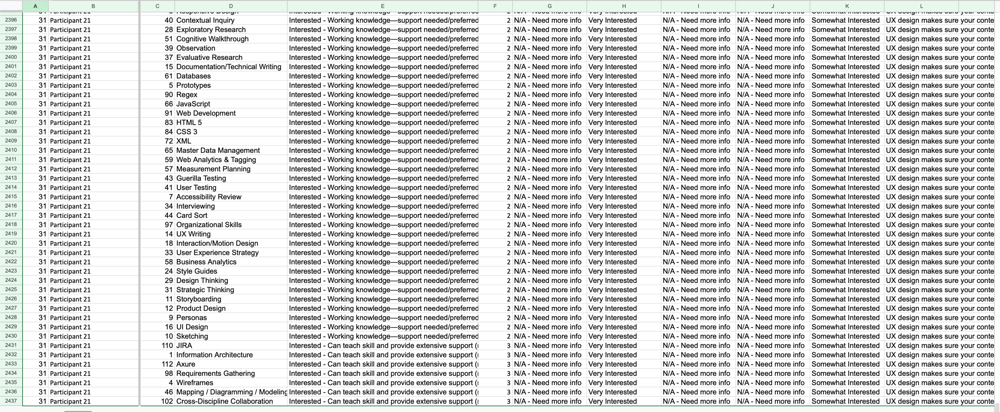
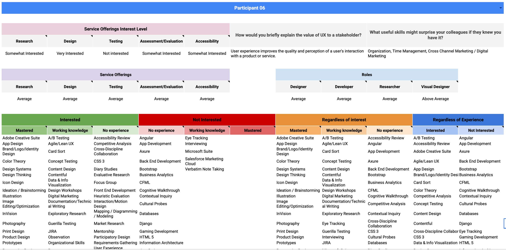
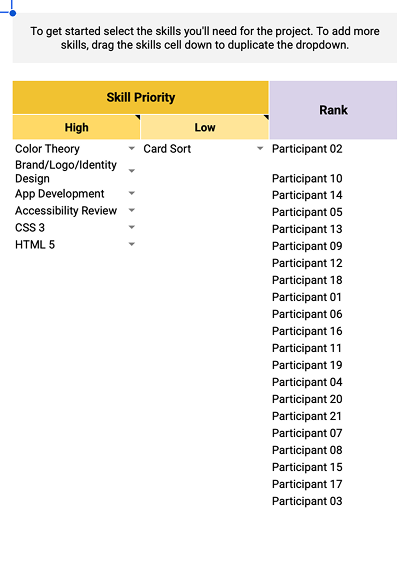
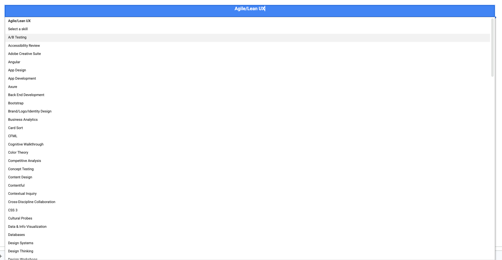
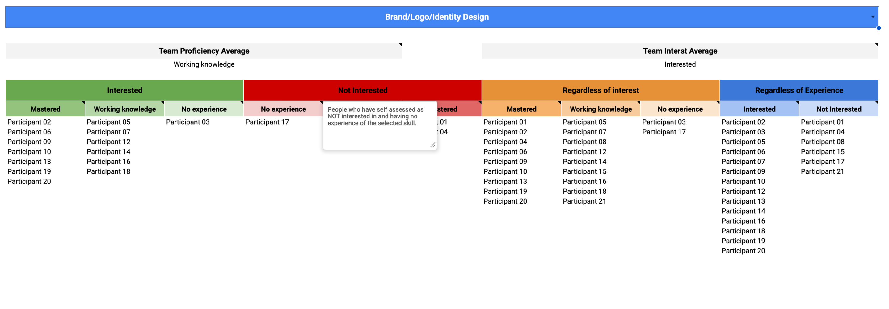
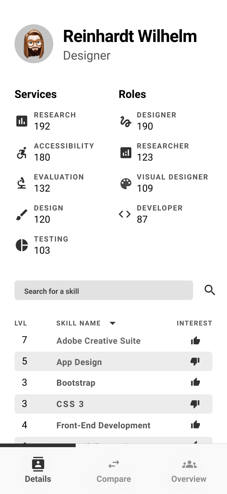
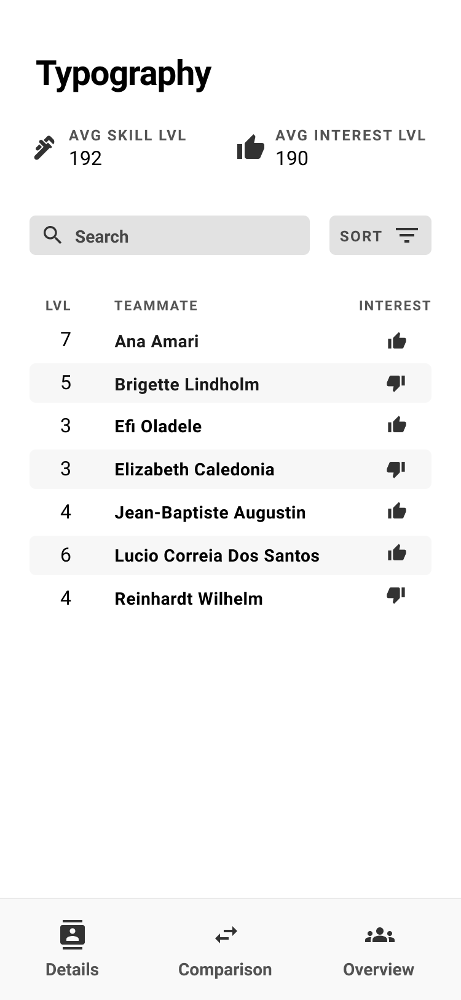
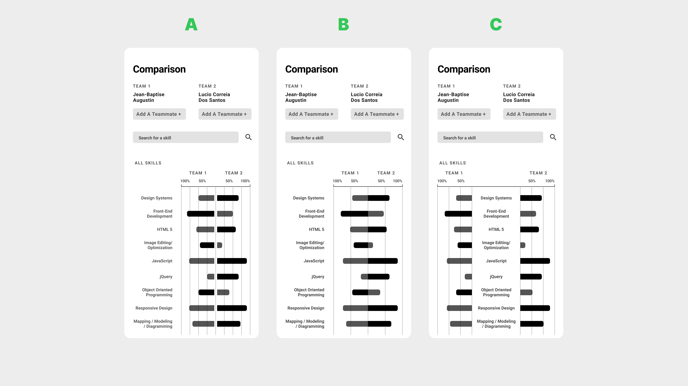
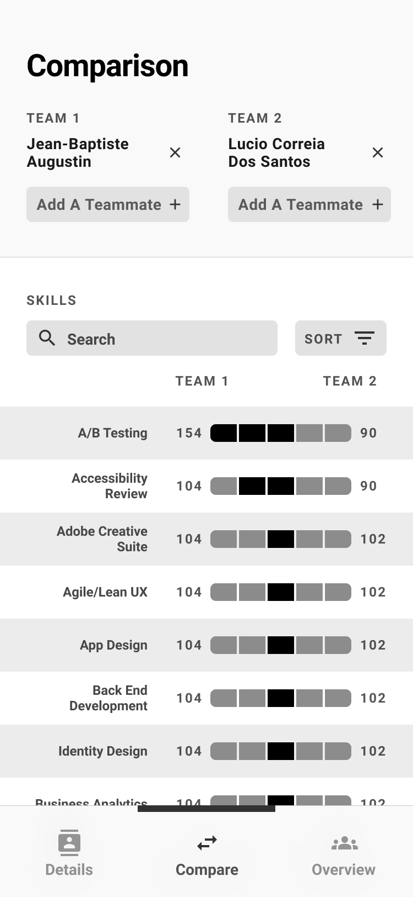
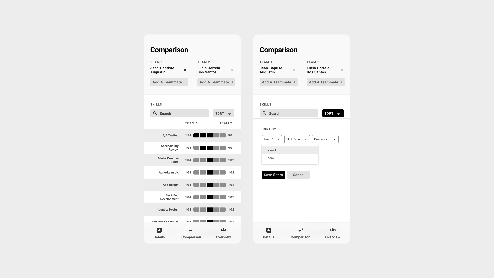

Data Systems · UX Research · System Design
UX Team Skills Assessment Tool
From Basic Survey to Strategic Team Optimization: Building a Skills Assessment System
I built this on my own time because nobody else was going to. A SQL-powered team optimization system across 120 skills for 21 UX professionals — self-initiated, self-taught, and used by leadership for real staffing decisions.
Project Overview
When two UX teams merged, leadership conducted a basic skills survey to understand the combined team capabilities. The survey was surface-level and provided little actionable insight for project assignments or identifying skill gaps.
Team assignments were essentially based on guesswork rather than data-driven understanding of individual strengths, interests, and optimal team compositions.
Project Details

The shipped Team Talent app — Details (individual profile), Skill view (who's strongest at what), and Team Overview (aggregate capability across 120 skills)
The Challenge
The merged UX organization faced a critical knowledge gap. With team assignments based on intuition rather than data, leadership couldn't effectively:
- Identify optimal team compositions for projects
- Understand individual capabilities and growth areas
- Make strategic hiring or training decisions
- Leverage hidden strengths within the team
The Core Problem: We needed to transform a superficial skills inventory into actionable team optimization insights that could drive real business decisions.

The raw data underneath — 2,500+ rows of participant/skill combinations, each rated across expertise, interest, and multiple role dimensions. Useful only once systematically queried.
An Unexpected Foundation
From Overwatch to UX Team Optimization
My expertise with Google Sheets' QUERY function came from an unexpected source: analyzing my own Overwatch gameplay statistics. I had built complex spreadsheets to track damage output, kill ratios, and survival metrics to identify improvement areas in my gaming performance.
Key Skills Transfer:
- Multi-dimensional analysis: Gaming stats (damage/kills/survival) → UX skills (expertise/interest/role fit)
- Performance optimization: Personal gameplay improvement → Team composition optimization
- Pattern recognition: Identifying gameplay weaknesses → Discovering organizational skill gaps
Solution Architecture
Comprehensive Skills Database
I created a centralized data system capturing comprehensive skills assessment across 120 different UX competencies. Each team member rated their expertise level and interest level for every skill, creating a rich multi-dimensional dataset.
Assessment Framework
Expertise Scale: No Experience | Working Knowledge | Mastered
Interest Scale: Interested | Not Interested
Scope: 120 UX skills covering technical, strategic, and domain expertise

Individual participant view — service interest, role fit averages, and full 120-skill breakdown across proficiency and interest dimensions

The 120-skill taxonomy — every competency available as a query parameter across all analytical views
SQL-Powered Analysis Views
Using Google Sheets' QUERY function extensively, I built multiple analytical views that could slice and dice the data:
Individual View
Complete skill profiles for each team member
Skill Analysis
How all teammates ranked across specific skills
Role Definition
Weighted skill matching against role requirements
Service Capability
Team capacity for four core service offerings
Team Comparison
Custom team builder with strength analysis
Project-Specific
Flexible skill matching beyond traditional roles

Skill analysis view — select any skill to see all 21 teammates sorted by proficiency and interest, with team averages at the top

Team builder — set high and low priority skills, and teammates are automatically ranked by weighted fit score for that project configuration
Custom Team Builder: Leadership could slot in any number of teammates and instantly see aggregated skill strengths, capability gaps, role distribution, and service delivery capacity across all 120+ competencies.
Key Design Decisions
Self-Assessment Psychology
The Dunning-Kruger Effect in Practice
Team members with limited expertise often overrated their abilities, while highly skilled individuals who understood the depth of their knowledge gaps rated themselves more conservatively. This created data distortions where true experts appeared less capable than novices on paper.
Calibration Considerations
While I didn't implement peer validation in this version, recognizing these psychological patterns informed how leadership interpreted the results and highlighted the need for managerial context when making staffing decisions.
From Spreadsheet to App
As the system matured, I designed a companion mobile app — Team Talent — that made the data accessible to leadership without requiring any Sheets literacy. Three views covered the core use cases.

Details tab — individual profile with service and role scores, searchable and sortable skill list with proficiency level and interest indicator

Overview tab — select any skill to see the full team ranked by proficiency, with interest indicators showing who actually wants to use it
Comparison View — Design Iteration
The comparison view went through three distinct layouts before landing on the final approach. The challenge was representing two teams' skill levels against each other in a way that was scannable at a glance.

Three comparison view iterations — A (mirrored bars from center), B (single direction with clearer labeling), C (refined spacing). B and C tested better for quick scanning.

Final comparison view — team members stacked per side, skills listed with bar charts showing relative proficiency. Add Teammate+ supports multi-person team comparisons.

Sort and filter interaction — leadership could re-sort by either team's strength, making it easy to identify where one team significantly outperformed the other
Query Interface Design
Rather than forcing non-technical stakeholders to write QUERY formulas, I created pre-built analytical views that automatically surfaced insights. Leadership could simply navigate between views to find answers like:
- "Which team members have mastered accessibility but aren't interested in research?"
- "What's our team's overall capacity for usability testing projects?"
- "How do these three potential team configurations compare for a complex research project?"
Results & Impact
Hidden Technical Capabilities
The assessment revealed that several team members had stronger development backgrounds than leadership realized, opening up new possibilities for technical UX work and cross-functional collaboration.
Strategic Decision Support
Assessment results informed Nielsen Norman Group course selections for the team, demonstrating how individual skill gaps could drive organizational learning investments.
What I'd Do Differently
- Automated Data Refresh: Implement more sustainable data maintenance processes, possibly integrating with HR systems rather than relying on manual bi-annual surveys.
- Dual Assessment Framework: Build a system where both employees and managers complete assessments, then use the comparison view to facilitate career development conversations around discrepancies.
- Enhanced Validation: Consider peer validation for critical skills or implement calibration exercises to help team members understand skill level definitions more consistently.
Unrealized Potential: We could have used this for career progression conversations where both you and your manager assessed you, then used the comparison view to come together and discuss any differences — but I never built that feature.